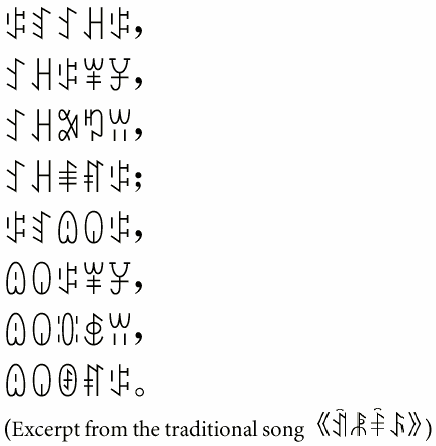
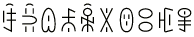

Nuosu SIL - Design
Nuosu SIL includes a complete set of Yi syllables and radicals, along with punctuation and other useful symbols. A basic set of Latin glyphs, including Arabic numerals, is also provided. Apart from a few Yi characters and Chinese punctuation marks, the design is the same as its predecessor, SIL Nuosu (obsolete).

Representative samples:
